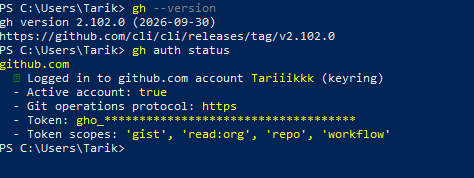

2. Instalación y configuración de GitHub CLI
GitHub CLI (gh) es una herramienta que permite interactuar con GitHub
directamente desde la línea de comandos.
En lugar de realizar determinadas operaciones exclusivamente desde el navegador, GitHub CLI permite realizar acciones relacionadas con GitHub desde la terminal.
En este apartado se instala GitHub CLI y se configura la autenticación con la cuenta de GitHub que se utilizará para trabajar con el proyecto.
Instalación de GitHub CLI
Como el equipo parte de una instalación inicial, primero es necesario instalar GitHub CLI.
En Windows se puede utilizar el administrador de paquetes winget.
Desde PowerShell se ejecuta:
winget install --id GitHub.cli
Comprobación de GitHub CLI e Inicio de Sesion
Para comprobar que GitHub CLI está instalada se ejecuta:
gh --version
gh auth status
Y para iniciar sesion se ejecuta:
gh auth login
Resultado
La siguiente captura muestra la versión de GitHub CLI instalada y el estado de autenticación de la cuenta de GitHub:
